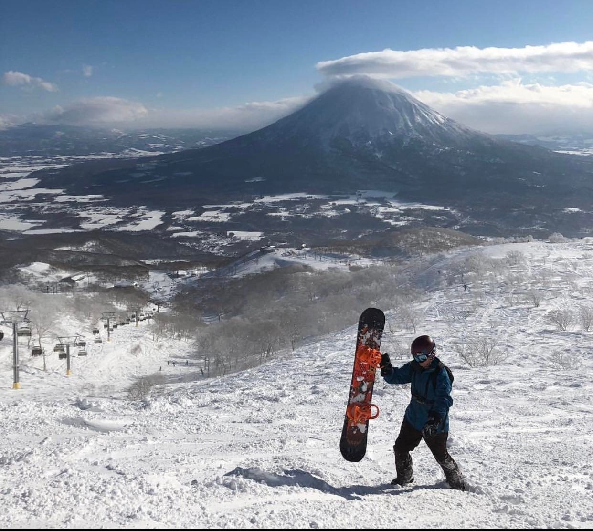
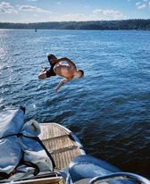

About Me
My name Is Jye Calder-Mason, I'm 26 and currently living in Newcastle, NSW.
I'm currently in my first term in the Coder Academy, before changing careers, I started a Carpentry Apprenticeship (2013) and up until 2021 I worked day to day as a carpenter.
I wasn't feeling fulfilled in my career choice, so here I am, attempting my first webpage for term 1 in the Coder Academy.

I'm an outgoing and adventurous person, love to travel and try out new things around the world. I'm generally seen with a big smile on my face, and always joking around (99% of the time)
These are two photos from before and after COVID.
Snowboarding in Japan, Niseko days before lockdown in Australia was an incredible experience, apart from the snow being incredible,
It was very strange with nobody on the mountain or in the town itself. And me moments before belly flopping over NYE in 2021.
